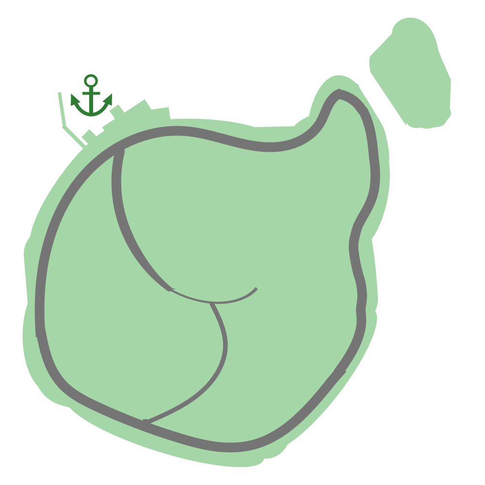
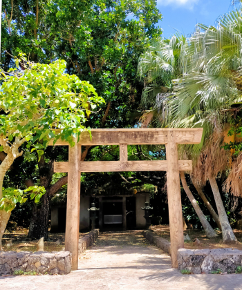
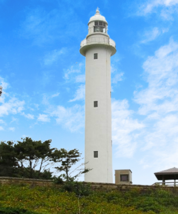
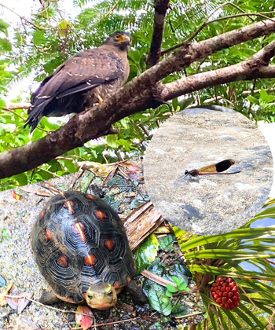
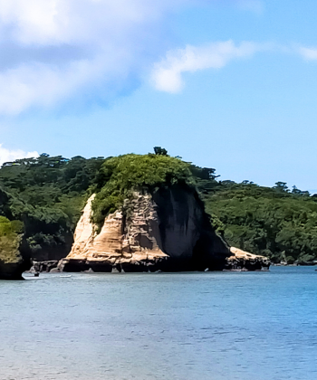
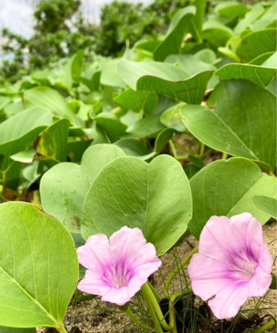
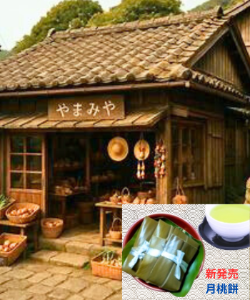

海沿いの道にはサイクリングロードも整備されておりアップダウンも少なめ。島を巡るなら自転車がおすすめです。
一周の所要時間はだいたい4時間。潮風を感じながら、のんびり流れる島の時間を楽しんでください。
途中には売店や自動販売機がありませんので、お飲み物や軽食の準備はお忘れなく。

 天の門です
天の門です
天結神社です
天結小島灯台です
自然散策路です
天の門です
昼顔の群生地です
特産品販売所です

天結神社
1959年に都指定文化財に指定。御祭神は天比女尊です。流星群を率いてこの地に降りた神々の一柱として崇められています。

天結小島灯台
初点灯は1902年3月11日。現在の建物は1950年に再建されたコンクリート造で、高さ34m。穏やかな海岸線と青い空に映える灯台が魅力です。

自然散策路
風景、季節の香り、鳥や虫の音などを楽しめます。木漏れ日や小さな生き物、そして天然記念物との思いがけない出会いも魅力です。

天の門
全長約3kmの鍾乳洞。詳細は不明ですが、薄明かりに照らされる神秘的な空間は、昔の人々が天に続く道と信じたことを納得させてくれます。

昼顔群生地
夏の西ノ浜海岸は紅紫色のグンバイヒルガオが一面に咲き誇り、訪れる人々を魅了します。潮風とほのかな花の香りが心地よい場所です。

特産品販売所
体験しよう！の「空き家DIY」で改装された古民家を利用しています。地元の特産品を揃えた販売所と茶房が併設され、休憩にも最適です。